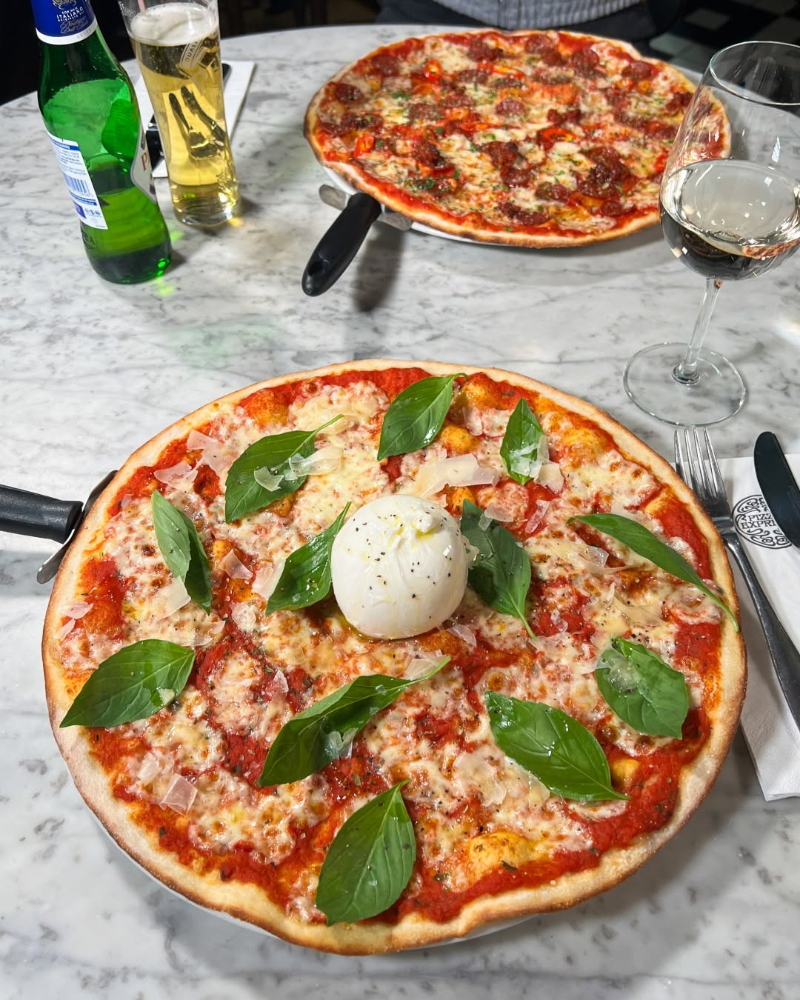

Margherita Pizza Recipe

Margherita pizza is a classic Italian pizza made with fresh ingredients, including tomatoes, mozzarella cheese, fresh basil, and a drizzle of olive oil. It is known for its simple yet delicious flavors.
Ingredients:
- 1 pizza dough (store-bought or homemade)
- 1/2 cup tomato sauce
- 8 oz fresh mozzarella cheese, sliced
- Fresh basil leaves
- 2 tablespoons olive oil
- Salt and pepper to taste
Steps:
- Preheat the oven to 475°F (245°C).
- Roll out the pizza dough on a floured surface.
- Transfer the dough to a pizza stone or baking sheet.
- Spread the tomato sauce evenly over the dough.
- Arrange the mozzarella slices on top of the sauce.
- Top with fresh basil leaves and drizzle with olive oil.
- Sprinkle salt and pepper to taste.
- Bake for 12-15 minutes, or until the crust is golden brown.
Back to Home